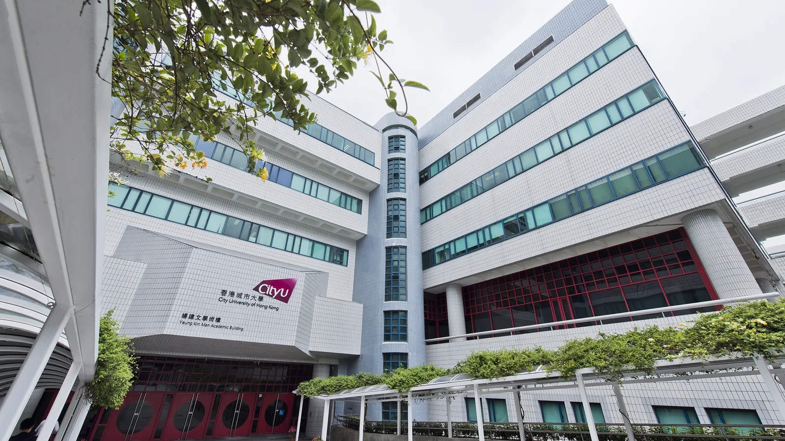

Venue · 01
City University of Hong Kong
Sessions are held at the Yeung Kin Man Academic Building on the university campus, with workshops and posters in adjacent buildings.
City University of Hong Kong
83 Tat Chee Avenue
Kowloon
Hong Kong SAR
Nearest MTR
Kowloon Tong Station connects to Festival Walk and the CityU campus by footbridge. Follow signs toward City University of Hong Kong from the mall concourse.
Hong Kong SAR
22.3364° N · 114.1733° E


Accommodation · 04
Recommended Hotels
Driving distances and public transport times to the City University of Hong Kong campus are approximate. Journey times include walking.
| Hotel | Official Website | Driving Distance | Public Transport to Venue |
|---|---|---|---|
| Cordis, Hong Kong | Official website | Approx. 4 km | MTR Kwun Tong Line: Mong Kok → Kowloon Tong, then walk to campus. Approx. 20 min total. |
| Royal Plaza Hotel | Official website | Approx. 3 km | MTR East Rail Line: Mong Kok East → Kowloon Tong, then walk to campus. Approx. 20 min total. |
| Harbour Grand Kowloon | Official website | Approx. 7 km | MTR Kwun Tong Line: Whampoa → Kowloon Tong, then walk to campus. Approx. 30 min total. |
| Hyatt Regency Hong Kong, Sha Tin | Official website | Approx. 13 km | MTR East Rail Line: University → Kowloon Tong, then walk to campus. Approx. 30 min total. |